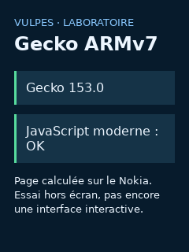

Bonjour, Nokia.
Gecko 153.5 ESR a calculé une page HTML/CSS/JS sur ce Nokia.
Cet écran utilise KaiOS / Gecko 48.
Le moteur récent est testé hors écran. Gaia reste à porter.
Le moteur récent est testé hors écran. Gaia reste à porter.
Petit format.
- Architecture
- ARMv7 · 32 bits
- Noyau
- Linux 3.10.49
- Mémoire visible
- 400 Mio environ
- Écran intérieur
- 240 × 320
À toi de jouer.
Appuie sur les chiffres, les flèches ou la touche centrale.
Aucune donnée personnelle lue. Aucune partition système modifiée.

Image du rendu hors écran.
Cette prévisualisation reste dans KaiOS.